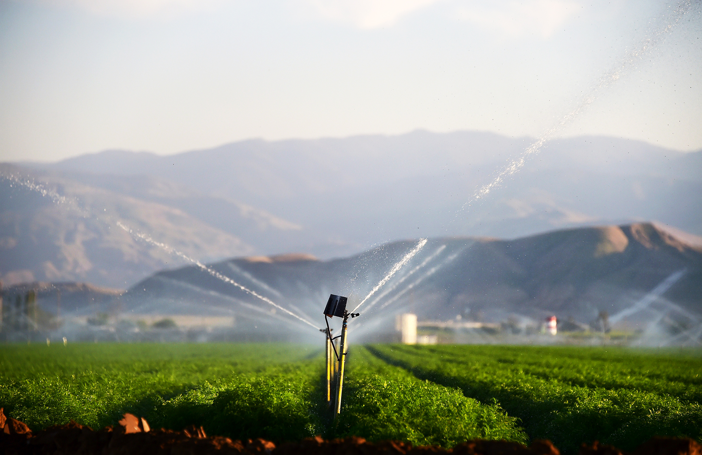
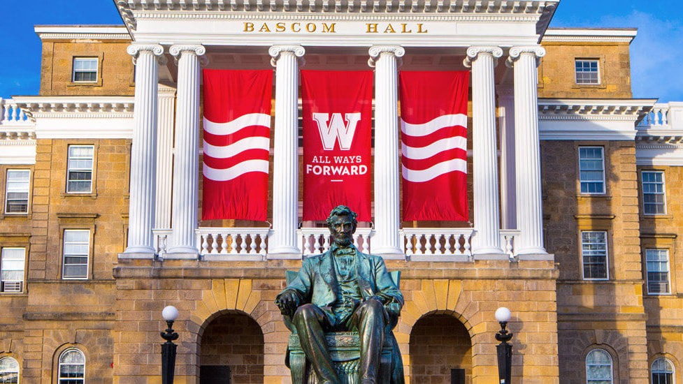

Wisconsin Senate OKS High-Capacity Wells Bill
The state Senate has approved a Republican bill that would relax high-capacity well regulations.
Oscar Mayer Plant Now Set For July 31 Shutdown
Oscar Mayer's new closing date is July 31, parent company Kraft Heinz confirmed Monday.

UW- Madison Students Seek Artists, Writers For Bus Project
Art history students Yusi Liu and Alex Polach could be commuting to class this fall on a Metro bus of their own creation.
Latest Local News
Missouri man charged with attempted homicide in shooting that led to utility pole crash
Overnight rain expected; high could hit 72 on Saturday
UW semesters shorter starting in the fall
Outdoor lovers to legislators: Ban frac sand mines, limit high-capacity wells Bridge removal to close part of Interstate near Madison Monday, Tuesday nights